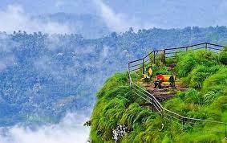

KANNUR
Kannur is a coastal city in the south Indian state of Kerala. It was once an ancient trading port. Enduring monuments such as 16th-century St. Angelo Fort, once occupied by European colonial forces, show the city’s significant role in the spice trade. Housed in a former palace, the Arakkal Museum highlights Kerala's one Muslim royal family. The palm-fringed sands of Payyambalam Beach run along Kannur’s western shore.